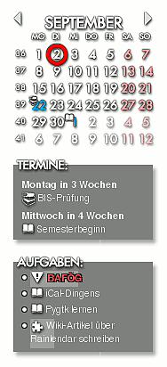

Rainlendar
Dieser Artikel wurde für die folgenden Ubuntu-Versionen getestet:
Ubuntu 14.04 Trusty Tahr
Zum Verständnis dieses Artikels sind folgende Seiten hilfreich:
Automatischer Start von Programmen, optional
Archive entpacken, optional
Einen Programmstarter erstellen, optional
Ein Terminal öffnen, optional
Einen Editor öffnen, optional
Rechte für Dateien und Ordner ändern, optional
Rainlendar  kann einen Kalender direkt in den Desktop-Hintergrund eingebettet anzeigen. Des Weiteren verfügt Rainlendar über eine integrierte Termin- und Aufgabenverwaltung. Eigene Termine werden im Kalender mit Symbolen gekennzeichnet und als Pop-ups angezeigt, während Aufgaben und To-Do-Liste in einem eigenen Fenster dargestellt werden.
kann einen Kalender direkt in den Desktop-Hintergrund eingebettet anzeigen. Des Weiteren verfügt Rainlendar über eine integrierte Termin- und Aufgabenverwaltung. Eigene Termine werden im Kalender mit Symbolen gekennzeichnet und als Pop-ups angezeigt, während Aufgaben und To-Do-Liste in einem eigenen Fenster dargestellt werden.
Die Software ist in zwei Varianten verfügbar: die kostenlose Lite-Version bietet nur den direkten Im- bzw. Export des iCal-Formats, die Pro-Version für knapp 10 EUR zusätzlich noch Unterstützung für Google Kalender, Remember The Milk  und Kalender im Netzwerk.
und Kalender im Netzwerk.
Weitere, sehr ausgefeilte Möglichkeiten zur Terminverwaltung bieten die Programme Evolution, Thunderbird (in Verbindung mit der Erweiterung Lightning) oder Kontact. Daneben existieren viele weitere mehr oder weniger umfangreiche Kalenderprogramme. Leider zeigen alle diese Programme ihre Kalender aber nur innerhalb der eigenen Programmoberfläche an.
Alternativen zu Rainlendar können aber die Kalender-Module der GDesklets oder der Screenlets sein. Wer keine Desklets verwenden möchte, findet in myDesktopCalendar eine weitere Lösung.
Hinweis:
Diese Anleitung beschreibt nur die kostenlose Lite-Version. Die kostenpflichtige Pro-Version kann aber ohne weiteres genutzt werden. Die einzige Einschränkung ist, dass Einträge in Netzwerkkalendern den Vermerk "Unregistered" bekommen.
Installation¶
Das Programm ist nicht in den offiziellen Paketquellen enthalten, kann aber direkt über die Homepage des Entwicklers heruntergeladen werden.
Fremdpaket¶
Man lädt sich das als "Linux (Debian/Ubuntu)" gekennzeichnete .deb-Paket von Rainlendar Lite über die Download-Seite des Projekts (als 32- oder 64-Bit Paket) herunter und installiert es manuell [1].
Hinweis!
Fremdpakete können das System gefährden.
Danach kann das Programm bei Ubuntu-Varianten mit einem Anwendungsmenü über "Büro -> Rainlendar" oder mit dem Befehl rainlendar2 gestartet werden [2]. Alternativ kann man einen Eintrag im Autostart hinzufügen [3].
Manuell¶
Neben der oben beschriebenen Installation als .deb-Paket erleichtert eine manuelle, nicht systemweite Installation erste Versuche mit Rainlendar, insbesondere was die Verwendung zusätzlicher Skins und Sprachpakete angeht.
Man lädt sich das als "Linux (other)" gekennzeichnete .tar.bz2-Archiv von Rainlendar Lite über die Download-Seite des Projekts herunter und entpackt [4] es im eigenen Homeverzeichnis. Empfohlen wird in diesem Fall der Ordner ~/bin/rainlendar2/.
Ein Starter [5] für das Programm muss dann allerdings manuell angelegt werden. Ein Doppelklick auf die Datei rainlendar2 reicht aber auch aus.
Konfiguration¶

Man kann für Rainlendar zahlreiche Designs (Skins) und Sprachpakete herunterladen. Letzteres sind Dateien mit der Endung .r2lang. Die Skins liegen entweder als Dateien mit der Endung .r2skin (sollten bevorzugt verwendet werden) oder als Archivdatei vor (diese Variante ist veraltet und bereitet häufig Probleme). Die Lokalisierung findet immer in zwei Schritten statt: Programmsprache und Sprache des Skins (falls dieses in Deutsch vorliegt) müssen getrennt konfiguriert werden.
Es gibt allerdings ein Paket, welches zumindest das Standarddesign (Shadow4) für viele Sprachen gleichzeitig übersetzt. Es heißt Shadow4-Languages.r2skin-addon und ist ebenfalls auf der Seite mit den Sprachpaketen zu finden.
Um Transparenz zu erhalten, muss man bei aktiviertem Composite-Manager in "Einstellungen -> Erweitert -> Allgemein" bei "Transparenztyp" Systemeigen auswählen. Hat man die Desktop-Effekte deaktiviert, sollte man die Einstellung Kopieren (Voreinstellung) wählen.
Automatische Design-Installation und Lokalisierung¶
Sprachpakete und neue Designs lassen sich auf zwei Wegen automatisch installieren. Die erste Methode ist, die Datei einfach per "Drag and Drop" auf die Programmoberfläche zu ziehen und danach Rainlendar neu zu starten. Bei der zweiten Methode sollte Rainlendar zuerst geschlossen werden und dann folgender Befehl ausgeführt werden [6]:
rainlendar2 -i <Skin- oder Sprachdatei>
Danach muss Rainlendar gegebenenfalls neu gestartet werden (rechte Maustaste auf das Taskleisten-Symbol des Programms).
Manuell¶
Die Konfigurationsdateien für Sprachen und Design liegen bei einer systemweiten Installation in /usr/share/rainlendar2/locale/ und /usr/share/rainlendar2/skins/, bei einer manuellen Installation beispielsweise in ~/bin/rainlendar2/locale bzw. ~/bin/rainlendar2/skins. Es werden also nur bei einer systemweiten Installation Root-Rechte benötigt, wenn Sprachdateien und/oder Designs installiert oder entfernt werden sollen.
Sprachpakete¶
Bei den Sprachpaketen handelt es sich nur um umbenannte .zip-Archive. Man lädt sie sich zunächst herunter, benennt die Endung gegebenenfalls in .zip um und entpackt sie [4] (es geht normalerweise auch ohne Umbenennen). Den entstandenen Ordner, beispielsweise de_DE, kopiert man dann bei einer systemweiten Installation wie folgt in das dafür vorgesehene Verzeichnis [6]:
sudo cp -r /Pfad/zum/Ordner/ /usr/share/rainlendar2/locale/
Danach muss Rainlendar gegebenenfalls neu gestartet werden.
Designs¶
Der Befehl zum systemweiten Installieren eines neuen Skins sieht dann wie folgend aus [6]:
sudo cp /Pfad/zum/Skin/skin.r2skin /usr/share/rainlendar2/skins/
Ein alter Skin muss gegebenenfalls entpackt werden [4] und kann dann installiert werden. Wichtig ist, dass sich die Skin-Dateien, also Bilder und .ini-Dateien, mit Ausnahme der Icons direkt in dem Ordner befinden und nicht in einem weiteren Unterordner.
sudo cp -r /PFAD/ZUM/ORDNER/ /usr/lib/rainlendar2/skins
Rainlendar muss nach diesem Vorgang neu gestartet werden, um die Skins zu finden. Danach kann man das individuelle Design in den Einstellungen unter "Skins" einrichten bzw. anpassen. Anmerkung: ältere Versionen benutzten den Ordner /usr/share/rainlendar2/skins/.
Benutzung¶
Um neue Termine und Aufgaben einzutragen, sie zu verwalten sowie die Einstellungen und die Hilfe zu erreichen, klickt man mit der rechten Maustaste  auf den Kalender. Ein Blättern im Kalender erfolgt mit Hilfe hervorgehobener Elemente, die sich aber je nach Design unterscheiden.
auf den Kalender. Ein Blättern im Kalender erfolgt mit Hilfe hervorgehobener Elemente, die sich aber je nach Design unterscheiden.
Problembehebung¶
Autostart-Probleme¶
Normalerweise will man Rainlendar beim Anmelden automatisch starten lassen und setzt deswegen einen Eintrag im Autostart [6]. Es kann dabei allerdings zu Problemen kommen, die sich darin äußern, dass das Programm verzerrt auf dem Desktop erscheint oder trotz entsprechenden Einstellungen "über" normalen Fenstern (im Vordergrund) liegt. Zur Lösung kann man ein kleines Startskript mit folgendem Inhalt erstellen [7]:
1 2 3 | #!/bin/bash sleep 15 rainlendar2 --execute='Rainlendar_Refresh()' |
Macht man dieses Skript nun ausführbar [8] und setzt es in den Autostart [3], sorgt es dafür, dass Rainlendar verzögert gestartet und gleichzeitig aktualisiert wird, um den Einstellungen gemäß dargestellt zu werden.
Daneben passiert es insbesondere bei Abstürzen des XServers häufig, dass Rainlendar anschließend nicht mehr gestartet werden kann. Abhilfe schafft die Verwendung des Parameters -m beim Programmstart oder das Entfernen der Datei ~/.config/.rainlendar2/rainlendar2-username.
Im- und Export¶
Viele Kalender unterstützen den iCal-Standard, also Dateien mit der Endung .ics. Somit kann Rainlendar ganz einfach zusammen mit Anwendungen wie Evolution oder (Mozilla) Lightning genutzt werden. In den Einstellungen von Rainlendar unter "Kalender" kann man nachschauen, wo sich die Kalenderdatei befindet und sie dann in andere Anwendungen importieren. Umgekehrt kann man auch andere (exportierte) iCal-Kalenderdateien in Rainlendar hinzufügen. Empfehlenswert sind diese Kalenderdateien .
Erweiterungsmöglichkeiten¶
Es ist möglich, für Rainlendar eigene Designs zu erstellen. Die in das Programm integrierte Hilfe gibt dazu eine Anleitung. Außerdem stellt Rainlendar eine kleine Programmierschnittstelle zur Verfügung, die man mit der Skriptsprache Lua nutzen kann und deren Referenz ebenfalls in der Hilfe zu finden ist. Beispiele finden sich auch im Rainlendar Wiki .
Links¶
deviantART
- alternative Quelle für Skinsdeutsche Übersetzung
des Shadow4 Standard-Skins (enthält nur die Sprachen Englisch und Deutsch)Kalenderdateien
- Feiertage, Schulferien und Mondphasen

- Erstellt mit Inyoka
-
 2004 – 2017 ubuntuusers.de • Einige Rechte vorbehalten
2004 – 2017 ubuntuusers.de • Einige Rechte vorbehalten
Lizenz • Kontakt • Datenschutz • Impressum • Serverstatus -
Serverhousing gespendet von